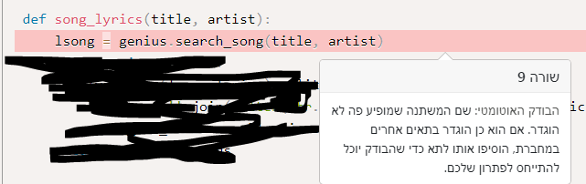

האמת שכבר מצאתי מודול מדהים שעובד בלי שום הרשמה והוא הרבה יותר ידידותי מהמודול הפופולארי שאני מניח שאנחנו מדברים עליו (זה שדורש הרשמה וטוקן). יש לי קשיים אחרים, אבל הם לא קשורים לשאלה בשרשור הזה.
מכיר את זה, עברתי אולי 4-5 מודולים עד שהחלטתי עם מי להישאר  זה תרגיל שגורם לעבור על כל האינטרנט חחח
זה תרגיל שגורם לעבור על כל האינטרנט חחח
בהצלחה!
2 לייקים
זו המטרה שלו, שמח שהצלחנו 
2 לייקים
איך עושים את זה?..
חפשי את cmd בשורת החיפוש בווינדוס.
קליק ימני בעכבר -> run as administrator.
תאשרי ותריצי מה שצריך.
לייק 1
היי , אם נשים חרעפש - הבודק לא יזרוק שגיאה שהתרגיל לא רץ? זה בסדר?
לא. כי הבודק לא בודק נכונות של התוצאות, אלא במקרים ספציפים ורק בודק שהקוד עומד בכללי דקדוק של פייתון.
לפחות במקרה הזה.
לייק 1
לייק גם לעריכה 

לייק 1
מה משמעות ההערה הזו של הבודק האוטומטי?
S310-Audit url open for permitted schemes. Allowing use of file:/ or custom schemes is often unexpected
נראה לי פספסתי את השיעור שלמדנו מה זה חרעפש
אבל באמת, למה הכוונה?
כשאת מעלה את התרגיל, אם השתמשת במודול שמצריך API Token, שמרי אותו לעצמך ואל תשתפי אותו עם הבודקים. שימי שם מחרוזת ריקה או כל רצף תווים מוזר שבא לך
לייק 1
האם מישהו נתקל בהודעה שכזו של הבודק האוטומטי?

מה כבר עשיתי לא טוב???
מאמין ששכחת לייבא את המודול.
2 לייקים
צוות הדרכה יקר, הבנתי משיטוט באינטרנט שכנראה תמיד יוצג ה- warning הבא
S310-Audit url open for permitted schemes. Allowing use of file:/ or custom schemes is often unexpected
כאשר פותחים url לקריאה ע"י urllib.request.urlopen(url) ולכן גם מופיעה הודעה של הבודק האוטומטי. האם תוכלו לייעץ בעניין (להתעלם\ לעשות משהו אחר וכו’)?
נא להביא קישור לתרגיל במערכת הגשות
אפשר להתעלם. בגדול הוא מבקש ממך לעשות if ולוודא שהכתובת מתחילה ב־http או https
שלום,
מה הכוונה, צריך לחפש בשירים את 100 מילים הנפוצות ביותר בשפה האנגלית או בשירים עצמם?
את 100 המילים הנפוצות ביותר מתוך סה"כ המילים בשירים הנ"ל